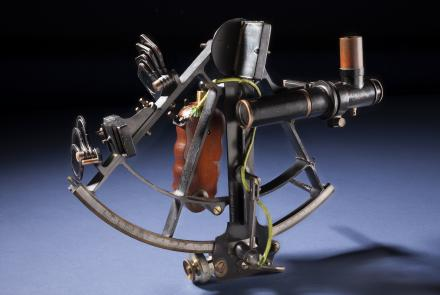
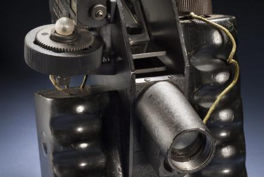
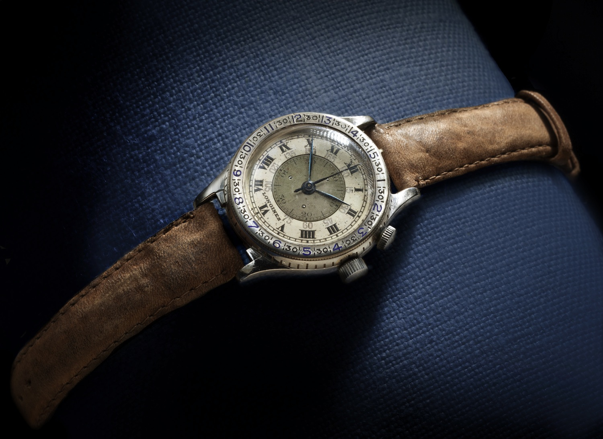
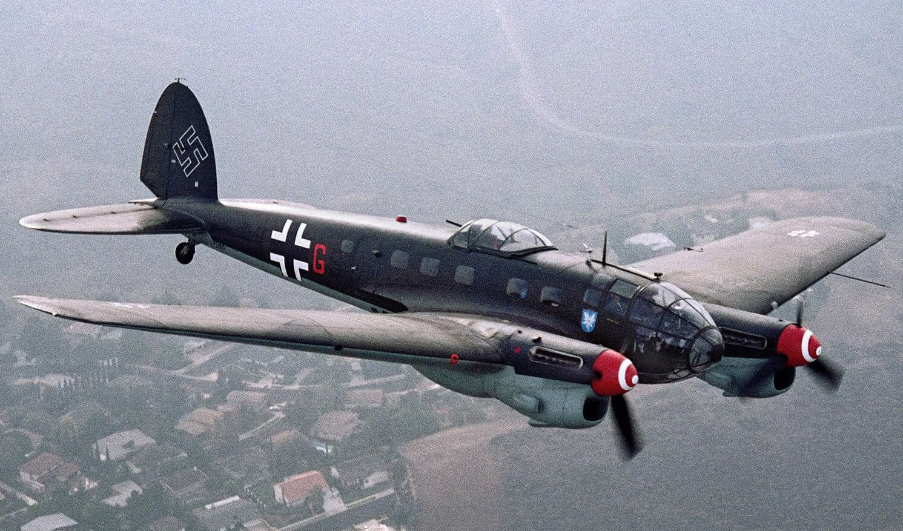
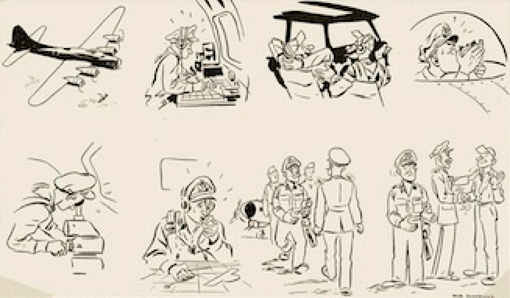
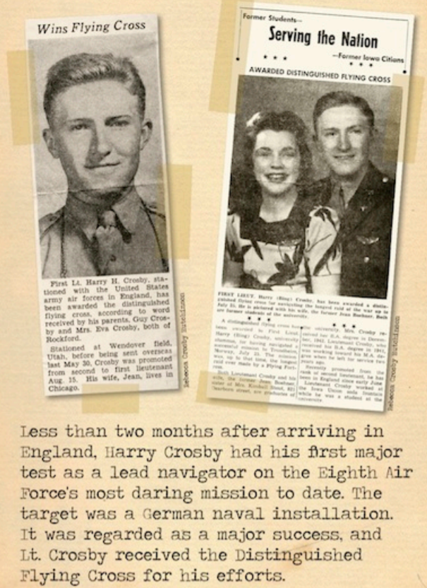
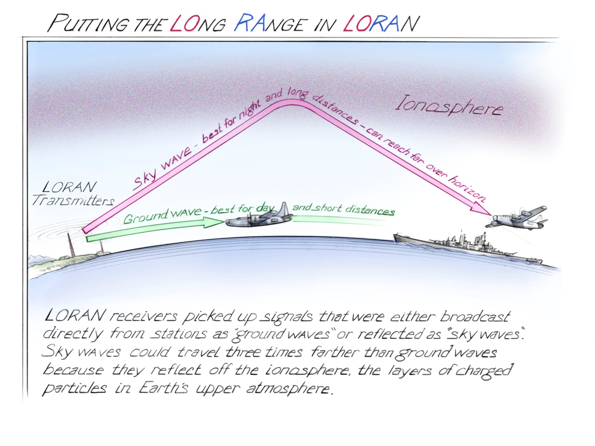
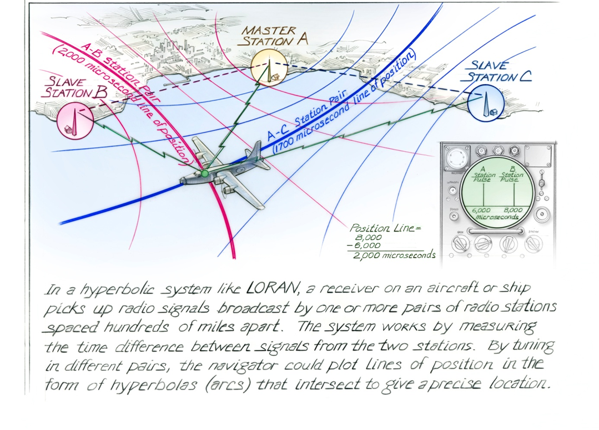
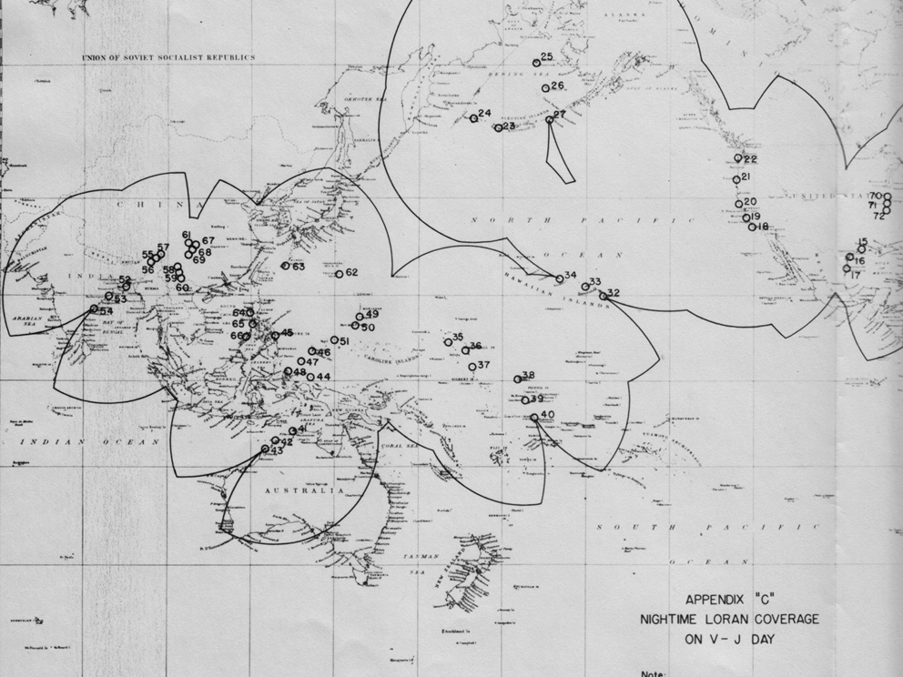

제2차 세계대전 당시 조종사들은 어떻게 길을 찾았을까?
게시: 2020-09-24T06:30:01+09:00
나폴레옹 전쟁 당시 영국 해군의 모험담을 담은 소설 'Aubrey & Maturin' 시리즈의 주인공은 잭 오브리인데, 잭이 함장으로 있는 영국 해군 군함에는 항상 미드쉽맨(midshipman)이라고 불리던 해군 사관후보생들이 여러 명 타고 있었습니다. 잭은 이 사관후보생들에게 '너희들은 배 조종 능력(seamanship)은 괜찮지만, 항법(navigation)에서는 문제가 많다'라면서 좁은 선실에 이 소년들을 앉혀 놓고 삼각함수 같은 수학을 직접 가르치는 장면이 종종 나옵니다. (당시의 천문 항법에 대해서는 nasica1.tistory.com/118 참조)
제2차 세계대전 당시의 비행기도 19세기 초의 범선과 똑같았습니다. 상대 전투기에 맞서 격렬한 선회와 급강하를 반복하며 비행기를 조종하는 능력과, 정해진 위치로 정확하게 찾아가는 능력은 확실히 달랐습니다. 그리고 비행기의 위치를 파악하고 제대로 방향을 잡는 항법 능력은 수학적 지식을 필요로 하는 것이었습니다. 기본적인 관측법은 나폴레옹 시대와 별반 다르지 않았습니다. 기준점인 그리니치 천문대에서의 정확한 시간을 알려줄 정밀 시계와 태양 또는 별의 각도를 측정할 육분의(sextant) 또는 팔분의(octant)가 있으면 항공기의 현재 위치를 측정할 수 있있습니다. 항공기용 육분의가 나폴레옹 전쟁 당시 잭 오브리가 사용하던 육분의와 다른 점은 딱 하나, 선박과는 달리 항공기에서는 수평선을 파악하기 어려울 수도 있었으므로 수평을 잡기 위한 물방울 수평 기준기(bubble level)가 접안경에 달려 있었다는 정도였습니다. 비행기를 조종하면서 어떻게 그런 것을 재고 그 측정값으로 지도에서 계산을 하냐고요 ? 당연히 못 했습니다. 그래서 당시 항공기에는 항법사가 따로 타고 있었습니다.

(물방울 수평 기준기가 달린 Brandis 항공 육분의입니다.)

(보슈 앤 롬(Bausch & Lomb) 항공 육분의입니다. 역시 bubble level이 달려 있습니다.)

(천문 항법에는 정밀 시계가 무척 중요합니다. 30초의 오차가 있다면 거리상으로는 12km 정도의 차이가 나게 됩니다. 이 손목시계는 1930년대 중반에 시계회사 롱진-윗나우어(Longines-Wittnauer)가 유명 비행사인 린드버그와 협업하여 만든 조종사용 항법 손목 시계인 Longines Lindbergh Hour Angle Watch입니다. 손으로 회전시킬 수 있는 시계테(bazel)에는 원래 항법사가 계산해야 하는 시간각(hour angle)을 쉽게 구할 수 있도록 미리 계산된 눈금으로 새겨 있습니다. 가끔 남성용 고급 스포츠 시계에 있는 것이 원래는 저런 천문 항법용입니다.)

(독일 하인켈 폭격기입니다. 보통 폭격기들은 등쪽에 돔(dome)형의 기관총좌가 있는데, 이건 천문 항해를 위해 육분의로 태양이나 별을 바라보는 관측창으로도 사용되었습니다. 그 이전에는 개방형 조종석에서 거센 바람을 맞으며 육분의를 조준해야 했답니다.)
제2차 세계대전이 본격화 되자, 미국의 공장들은 폭격기나 전투기 등 각종 군용기를 미친 듯이 찍어냈습니다. 가령 B-17 폭격기는 12,731대가 생산되었고, 함재 전투기인 F6F 헬캣(Hellcat)은 단 3년 동안에 12,275대가 생산되었습니다. 비행기야 이렇게 그냥 찍어내면 되는데, 조종사는 그렇게 공장에서 찍어내듯 할 수가 없었다는 점이 문제였습니다. 그러나 그냥 비행기를 이륙시키고, 회전시키고, 착륙시키는 것까지만 훈련시키는 것은 꽤 단기로도 가능했습니다. 문제는 수학적 지식이 필요한 항법 훈련이었지요. 1941년 초, 미육군 항공대 (당시 미국엔 아직 공군이 없었습니다) 전체에는 항법사가 딱 44명 밖에 없었습니다. 그나마 대부분 군 내부에서 훈련받은 것이 아니라 민간 학교에서 훈련받은 사람들이었습니다. 하지만 전쟁은 불가능한 것도 가능하게 만듭니다. 1945년 중반까지, 미육군 항공대는 무려 5만 명이 넘는 항법사들을 배출해냅니다. 그런데 이 글을 읽고 계시는 여러분 중 이과 출신 분들은 고등학교 때 삼각함수를 대부분 배우셨을 것입니다. 그런 분들 중에 각도계와 줄자를 이용해서 수km 떨어진 곳에 있는 건물까지의 거리를 삼각함수로 계산하실 수 있는 분이 몇 분이나 계신지요 ? 마찬가지로, 비록 미육군 항공대 항법사 학교를 졸업한 그 5만 명의 항법사들 중 몇 %가 영국에서 독일 드레스덴까지 정확하게 길을 찾아갈 수 있었을까요 ?

(그나마 대개 항법사는 조종사 훈련에서 신체적 이유로 탈락한 사람들이 했기 때문에 노고를 별로 인정 못받는 분위기였다고 합니다. 그에 비해 항법사들은 '조종사는 그저 트럭 운전수일 뿐이다, 실제 중요한 일은 항법사와 폭격수가 다 한다'라고 생각했다고 합니다.) 특히 독일로 폭격을 나가야했던 B-17 편대에는 제대로 된 항법사의 존재가 매우 중요했는데, 모든 항법사가 다 제대로 된 실력을 갖춘 것은 아니었으므로, 편대마다 수석 항법사(lead navigator)라는 직책을 따로 두고 이 전교 1등 항법사가 전체 편대의 길을 안내했습니다. 제2차 세계대전에 미 제8 공군이 B-17로 폭격을 시작하던 초기, 제100 폭격대의 수석 항법사 해리 크로스비(Harry Crosby) 중위는 폭격편대를 독일 해군기지로 정확하게 이끈 공로로 비행훈장(Distinguished Flying Cross)를 받기도 했습니다.

그나마 도시나 공장 같은 고정 목표물에 대한 폭격은 쉬웠습니다. LORAN (long range navigation) 시스템 덕분이었습니다. 이 시스템은 제2차 세계대전이 끝날 때까지 연합군의 극비 사항에 속했는데, 쉽게 말하면 고정된 전파 기지국에서 쏜 전파가 이온층(ionosphere)에 부딪혀 반사되는 반사파(sky wave)와 지상파(ground wave)로 나뉘어 온다는 것에 착안한 항법 시스템입니다. 지상파가 반사파보다 더 빠른 속도로 진행되었는데, 비행기에서 수신되는 이 미세한 속도 차이를 측정하면 수신하는 비행기가 해당 기지국에서 얼마나 멀리 떨어져 있는지를 기지국을 중심으로 하는 반원형의 곡선으로 그릴 수 있었었습니다. 거기에 더해, 전파를 발신하는 기지국이 2개 이상이라면, 그 반원들이 겹치는 지점으로 비행기의 정확한 위치를 파악할 수 있었습니다.
 
이 모든 것은 기술의 발전 덕분에 가능한 것이었습니다. 가령 요즘 전자 시계에 흔히 쓰이는 수정 발진식 시계(quartz clock)가 제2차 세계대전 직전에 개발된 덕분의 몇십 분의 1초도 측정이 가능해졌는데, 그런 정밀 시계가 없었다면 LORAN 시스템은 불가능했을 것입니다. 제2차 세계대전이 끝날 때까지, 연합군은 전세계 (주로 북반구에) 총 72개 소의 LORAN 기지국을 운영했는데, 이런 기지국은 적 폭격기의 타겟이 되지 않기 위해 주로 먼 시골 산간이나 섬 지방 등에 배치되었습니다. 이런 기지국들은 전쟁 이후에는 민간 항공기들의 항법에도 사용되었는데, 2010년대 초반까지도 운용되다가 결국 GPS에게 자리를 내주고 퇴역했습니다.

(제2차 세계대전 말기 우리나라와 일본을 포함한 동아시아 지역에 설치되었던 LORAN 기지국의 범위입니다. 저런 것이 필요했으니 인근 섬을 점령하는 것이 매우 중요했던 것이지요.)
Source : timeandnavigation.si.edu/theme/world-war-ii-advances-air-navigation
timeandnavigation.si.edu/navigating-air/challenges/overcoming-challenges/celestial-navigation
aeroantique.com/products/drift-meter-type-b-5-kodak?variant=24971059271